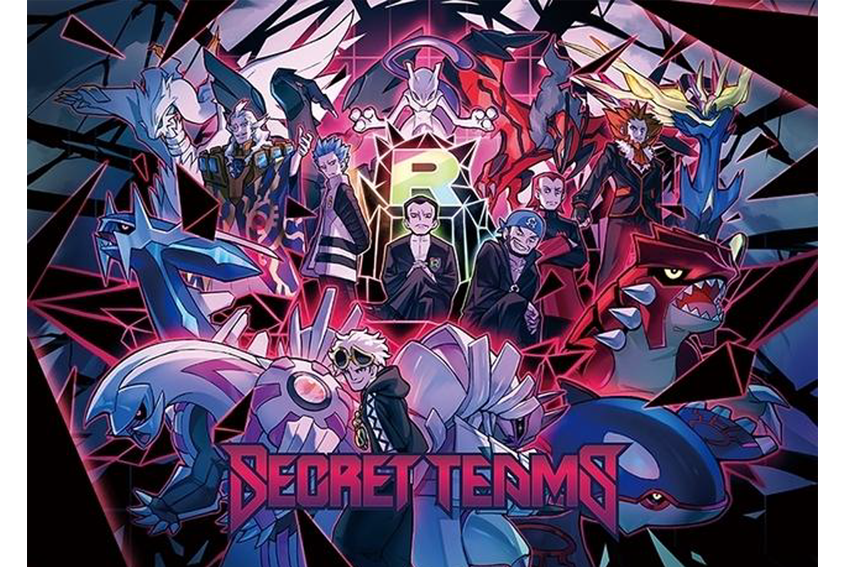

關於火箭隊
我們的征途是星辰大海
由坂木老大領導，主要活動地點為關都地區和城都地區，並以這兩地為據點。目的為捕捉強大或稀有的神奇寶貝利用牠們來奪取世界。所有的神奇寶貝都是為了火箭隊的光榮而存在。
完善的社會福利措施
在入隊時給予簽約金和收取入隊金，成為隊員後要繳交月費和年禮，而火箭隊總部會提供薪水、裝備或寶可夢等資源。有所表現的隊員能參與火箭隊舉辦的親睦大會、茶會和鼓勵會的款待。
完整的青訓機制
在關都地區、城都地區各地有專門招募、挖掘新人的機構存在，也有多個部門，並不一定要參與實際行動和偵查。但是，火箭隊的青訓營屬於「寬進嚴出」，只有佼佼者才能獲得實習生身份加入行動。然而，一旦「轉正」為正式隊員，能夠獲得高額加盟費，獲得工資的同時也需要向火箭隊總部定期彙報並交納年費，也有很大升遷的空間。